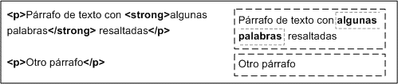
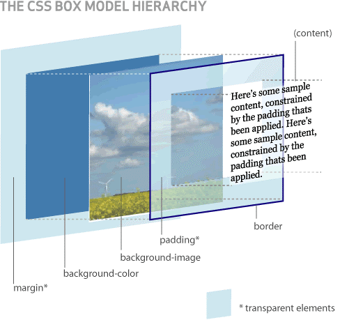
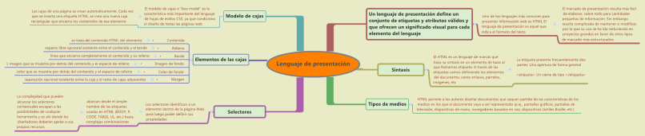

Lenguaje de Presentacion
Un lenguaje de presentación define un conjunto de etiquetas y atributos válidos y que ofrecen un significado visual para cada elemento del lenguaje, sino que ofrece un número de reglas sintácticas para poder crear documentos. Uno de los lenguajes más comunes para presentar información web es HTML.
El lenguaje de presentación es aquel que indica el formato del texto. Este tipo de marcado es útil para maquetar la presentación de un documento para su lectura, pero resulta insuficiente para el procesamiento automático de la información.
El marcado de presentación resulta más fácil de elaborar, sobre todo para cantidades pequeñas de información. Sin embargo resulta complicado de mantener o modificar, por lo que su uso se ha ido reduciendo en proyectos grandes en favor de otros tipos de marcado más estructurados.
Se puede tratar de averiguar la estructura de un documento de esta clase buscando pistas en el texto. Por ejemplo, el título puede ir precedido de varios saltos de línea, y estar ubicado centrado en la página. Varios programas pueden deducir la estructura del texto basándose en esta clase de datos, aunque el resultado suele ser bastante imperfecto.
Sintaxis
El HTML es un lenguaje de marcas que basa su sintaxis en un elemento de base al que llamamos etiqueta. A través de las etiquetas vamos definiendo los elementos del documento, como enlaces, párrafos, imágenes, etc. Así pues, un documento HTML estará constituido por texto y un conjunto de etiquetas para definir la forma con la que se tendrá que presentar el texto y otros elementos en la página.
La etiqueta presenta frecuentemente dos partes: Una apertura de forma general
Un cierre de tipo
Selectores
Los selectores identifican a un elemento dentro de la página Web para luego poder definir sus propiedades. Los distintos tipos de selectores abarcan desde el simple nombre de las etiquetas usadas en HTML (BODY, P, CODE, TABLE, UL, etc.) hasta complejas combinaciones que permiten un juego muy amplio de selecciones dentro de la página.
El conocimiento en profundidad de los distintos selectores es uno de los aspectos más complejos del lenguaje de las Hojas de Estilo y también el que nos permite sacar el máximo provecho de las CSS.
Existen muchos editores de páginas Web que facilitan la labor de crear y aplicar Hojas de Estilo, pero los selectores que se pueden definir con estos programas son sólo los más elementales. La complejidad que pueden alcanzar los selectores contextuales escapan a las posibilidades de cualquier herramienta y es ahí donde los diseñadores deberán apelar a sus propios recursos.
En esta sección se explican los llamados selectores simples.
Tipos de medios
HTML permite a los autores diseñar documentos que saquen partido de las características de los medios en los que el documento vaya a ser representado (p.ej., pantallas gráficas, pantallas de televisión, dispositivos de mano, navegadores basados en voz, dispositivos táctiles Braille, etc.). Al especificar el atributo media, los autores permiten a los agentes de usuario cargar y aplicar las hojas de estilo de manera selectiva.
Modelo de cajas
El modelo de cajas o “box model” es seguramente la característica más importante del lenguaje de hojas de estilos CSS, ya que condiciona el diseño de todas las páginas web. El modelo de cajas es el comportamiento de CSS que hace que todos los elementos de las páginas se representen mediante cajas rectangulares.
Las cajas de una página se crean automáticamente. Cada vez que se inserta una etiqueta HTML, se crea una nueva caja rectangular que encierra los contenidos de ese elemento. La siguiente imagen muestra las tres cajas rectangulares que crean las tres etiquetas HTML que incluye la página:

Los navegadores crean y colocan las cajas de forma automática, pero CSS permite modificar todas sus características. Cada una de las cajas está formada por seis partes, tal y como muestra la siguiente imagen:

Las partes que componen cada caja y su orden de visualización desde el punto de vista del usuario son las siguientes:
- Contenido (content): se trata del contenido HTML del elemento (las palabras de un párrafo, una imagen, el texto de una lista de elementos, etc.)
- Relleno (padding): espacio libre opcional existente entre el contenido y el borde.
- Borde (border): línea que encierra completamente el contenido y su relleno.
- magen de fondo (background image): imagen que se muestra por detrás del contenido y el espacio de relleno.
- Color de fondo (background color): color que se muestra por detrás del contenido y el espacio de relleno.
- Margen (margin): separación opcional existente entre la caja y el resto de cajas adyacentes.
El relleno y el margen son transparentes, por lo que en el espacio ocupado por el relleno se muestra el color o imagen de fondo (si están definidos) y en el espacio ocupado por el margen se muestra el color o imagen de fondo de su elemento padre (si están definidos). Si ningún elemento padre tiene definido un color o imagen de fondo, se muestra el color o imagen de fondo de la propia página (si están definidos).
Si una caja define tanto un color como una imagen de fondo, la imagen tiene más prioridad y es la que se visualiza. No obstante, si la imagen de fondo no cubre totalmente la caja del elemento o si la imagen tiene zonas transparentes, también se visualiza el color de fondo. Combinando imagenes transparentes y colores de fondo se pueden lograr efectos gráficos muy interesantes.
